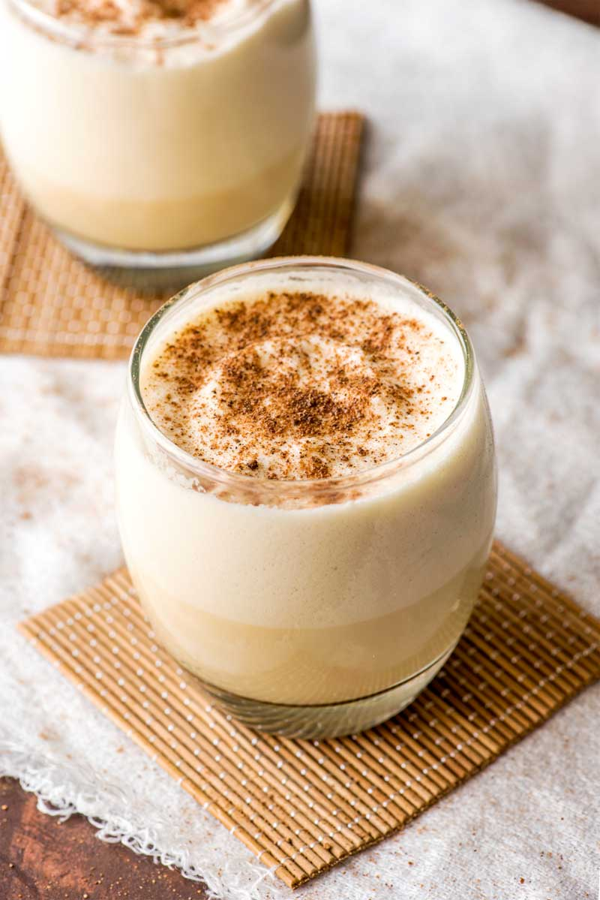

Eggnog

Description
Eggnog is a thick, creamy, and dairy- and egg-based drink.
It's traditionally made in large batches and served at holiday
gatherings. It's often spiked with bourbon
or rum, but it is also frequently served without alcohol.
Ingredients needed
- Milk
- Light cream
- Cinammon
- Vanilla Extract
- Cloves
- Nutmeg
- Egg yolks
- SUgar
- Rum
Steps
- Heat the milk, cinnamon,
cloves, and a dash of vanilla. Boil, then remove from heat.
- Whisk the egg yolks, then whisk in the sugar.
- Gradually whisk the hot milk mixture into the egg mixture.
- Cook the mixture over medium heat until thick, then strain to
remove the cloves.
- Stir in the cream, rum, remaining vanilla, and nutmeg.
Refrigerate overnight.